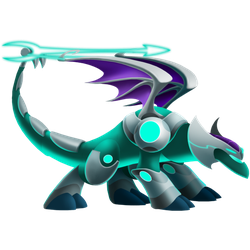

Dragão Arqueiro


Elementos
Número


562
Dados

792

23 HORAS
Descrição
Um toque de tecnologia para o arco e flecha tradicional: Este dragão consegue produzir flechas de laser nas costas e atirá-las com sua cauda. Elas nunca se esgotam. Dragão Arqueiro é um dragão Very Rare com a tipagem primária de electric. O Dragão Arqueiro também pode aprender movimentos Ice, e Dark.